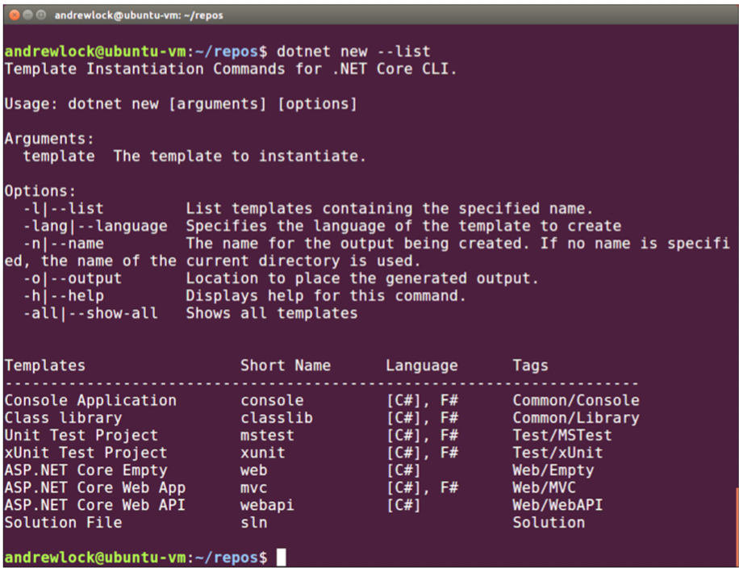

默认情况下，.NET CLI包括多个模板，如下所示。您还可以安装其他模板或创建自己的模板。
如果您想获得更多变化，请从GitHub或NuGet安装新的。您可以从预定义的模板轻松创建应用程序，以快速开始开发，如图1.11所示。 此外，Microsoft在2017年5月发布了Visual Studio for Mac。使用VS for Mac，您可以使用与Visual Studio类似的编辑器体验，但可以在为macOS本身设计的应用程序上构建跨ASP.NET Core应用程序。 VS for Mac仍然很年轻，但是如果您是macOS用户，那么这是一个不错的选择，并且无疑会看到很多更新。 在本书中，大部分示例都将使用Visual Studio，但您可以使用上面提到的任何工具进行后续操作。本书的其余部分假定您已经在计算机上成功安装了.NET Core和编辑器。 您已经到了本章的结尾；无论您是.NET的新手还是现有的.NET开发人员，都有很多东西可以使用-框架，平台，.NET Framework（这是一个平台！）。但是请振作起来：您现在拥有了所需的所有背景，并希望有一个开发环境来开始使用ASP.NET Core构建应用程序。
在下一章中，您将从模板创建第一个应用程序并运行它。我们将遍历组成您的应用程序的每个主要组件，并查看它们如何共同工作以呈现网页。
摘要
- ASP.NET Core是一个新的Web框架，以现代软件体系结构实践和模块化为重点。
- 最好用于没有外部依赖性的新的“green-field”项目。
- 目前无法将WCF和SignalR等现有技术与
- ASP.NET Core，但正在进行集成工作。
- 获取网页涉及发送HTTP请求和接收HTTP响应。
- ASP.NET Core允许动态构建对给定请求的响应。
- ASP ASP.NET Core应用程序包含一个Web服务器，该服务器用作以下项：提出要求。
- ASP.NET Core应用受到反向代理服务器的保护，不受Internet的影响，将请求转发到应用程序。
- ASP.NET Core可以在.NET Framework和.NET Core上运行。如果你需要Windows特有的功能（例如Windows注册表），您应该使用.NET Framework，但是您将无法运行跨平台。否则，请选择.NET Core以获取最大的覆盖范围和托管选项。
- Omni OmniSharp项目为许多流行的编辑器（包括跨平台的Visual Studio Code编辑器）提供了C＃编辑插件。
- Windows在Windows上，Visual Studio提供了最完整的多合一ASP.NET Core开发经验，但是使用命令行和编辑器进行开发与在其他平台上一样容易。